01
Part 01
AI 正在重构品牌增长竞争规则
- 传统小红书营销为何失效
- 新流量入口与品牌增长机会
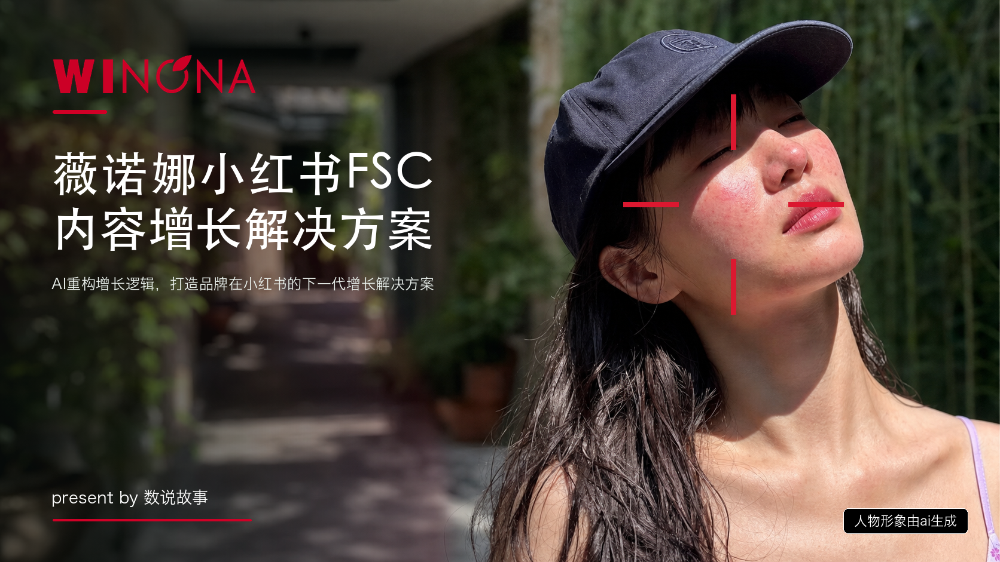
用户不是拒绝品牌内容，而是拒绝无法帮助决策的品牌内容。
来源：小红书用户调研，N=1,200，2026年5月
这不仅是一套投放方案，而是一套面向 AI 时代的营销增长解决方案。
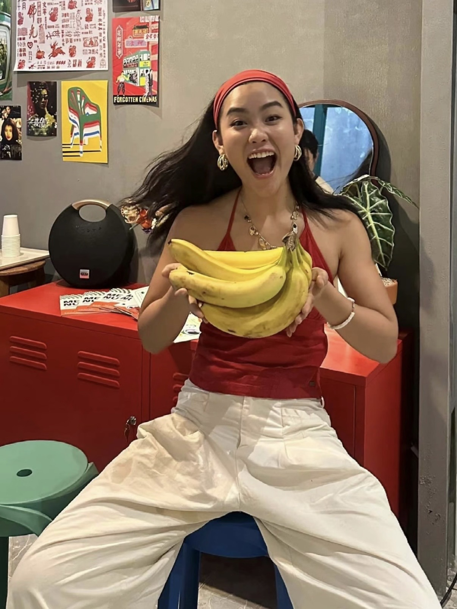
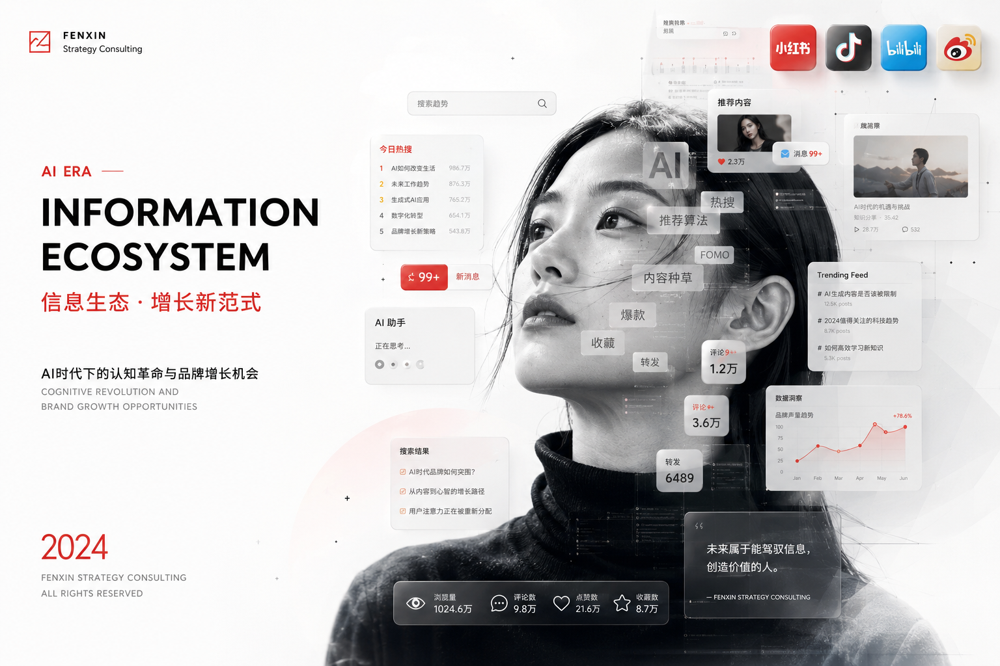
当内容供给爆炸，品牌真正争夺的是用户愿意相信的答案。
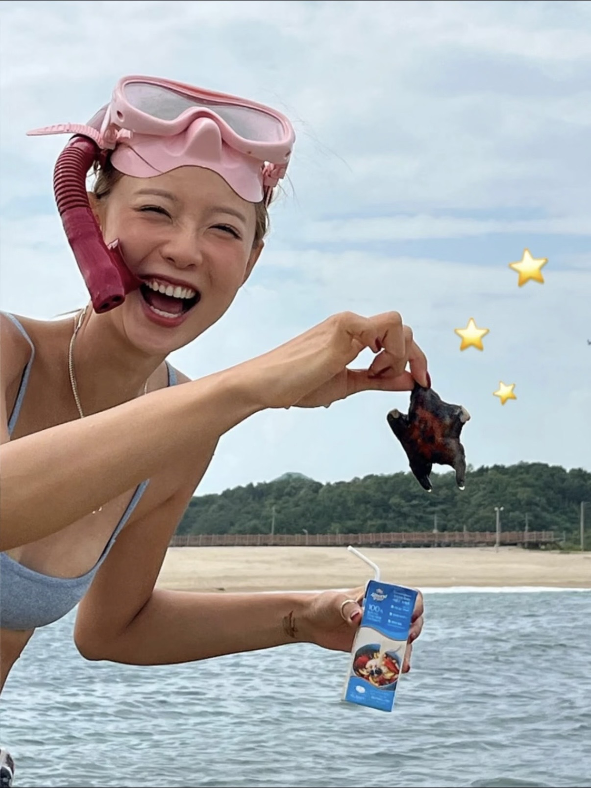
AI 并没有降低品牌营销门槛，而是彻底改变了品牌增长的竞争规则。当内容供给无限增长，品牌竞争开始从获取流量转向赢得用户信任。
| AI 带来的变化 | 对品牌意味着什么 |
|---|---|
| 内容供给指数级增长 | 获取注意力越来越难 |
| 爆文生命周期快速缩短 | 方法论难以形成持续壁垒 |
| 用户广告识别能力提升 | 单次种草效率持续下降 |
| 决策路径更加复杂 | 需要更多内容共同完成转化 |
| AI 加速信息获取 | 品牌需要进入更多决策入口 |
过去品牌试图用单条内容完成说服；现在用户会在多个入口之间反复搜索、比较和验证，再做出购买判断。
当 AI 生成内容快速增加，用户不会只依赖一个入口，而是在搜索、素人反馈、评论区、对比内容、AI 问答和品牌阵地之间交叉验证。
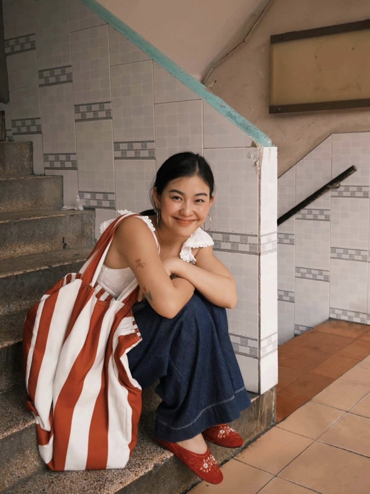
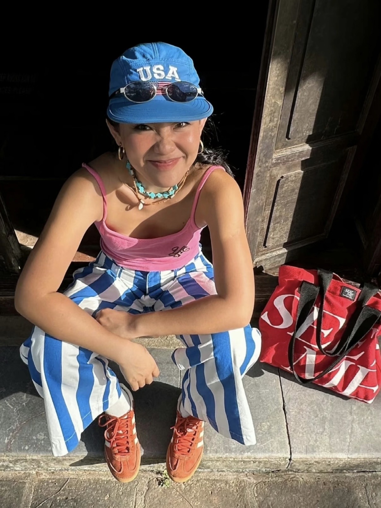
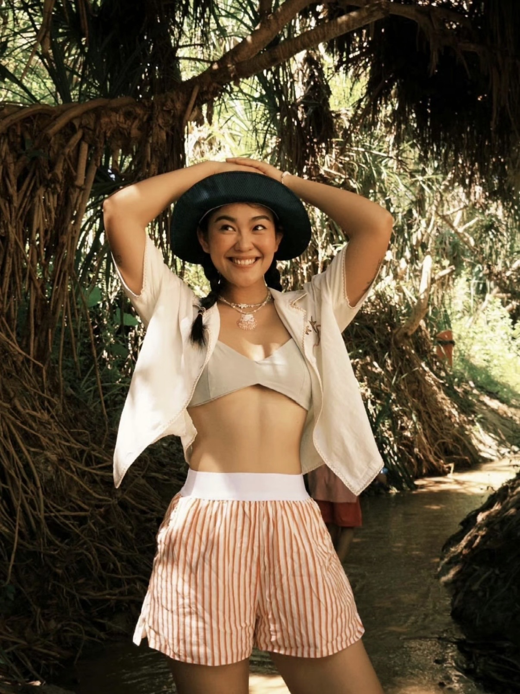
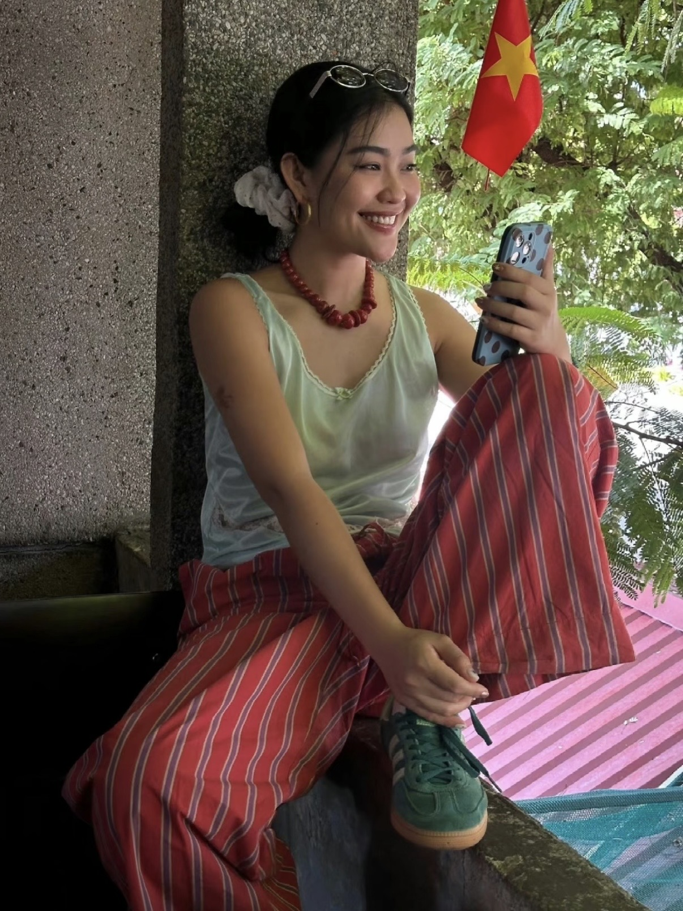
未来品牌竞争，不是谁生产更多内容，而是谁能够更快更准更广泛地覆盖用户决策入口。
被动触达，激发兴趣，建立初步认知。
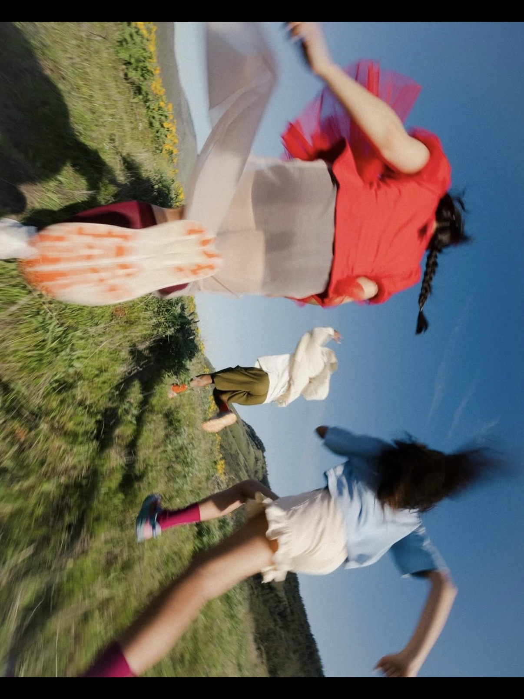
敏感也能皮肤透亮的秘诀晒后脸红发烫，今晚护肤这样减法
敏感肌晒后修护，别急着叠功效
泛红刺痛能不能用修护霜？
晒后急救 3 天记录
晒后脸烫时，我把护肤减到最少，先让皮肤稳下来。
未来品牌增长，不再是围绕产品卖点生产内容，而是围绕用户问题持续提供可信答案。
用户搜索越来越具体、越来越场景化，品牌需要围绕真实问题建立内容资产，而不仅仅覆盖品牌词和品类词。
内容重点从介绍产品，转向回答“适不适合我”“什么时候用”“和谁相比更适合”等真实决策问题。
真实体验、长期反馈、评论互动、对比测评等内容，将成为 AI 时代最重要的品牌资产。
AI 正在成为新的信息入口。品牌不仅需要被用户搜索到，更需要被 AI 理解、提取并引用。
从买流量，进入经营用户真实决策路径。
FSC 将预算从一次性曝光投入，重构为可持续复用的内容资产投入，实现效率与规模的双重提升。
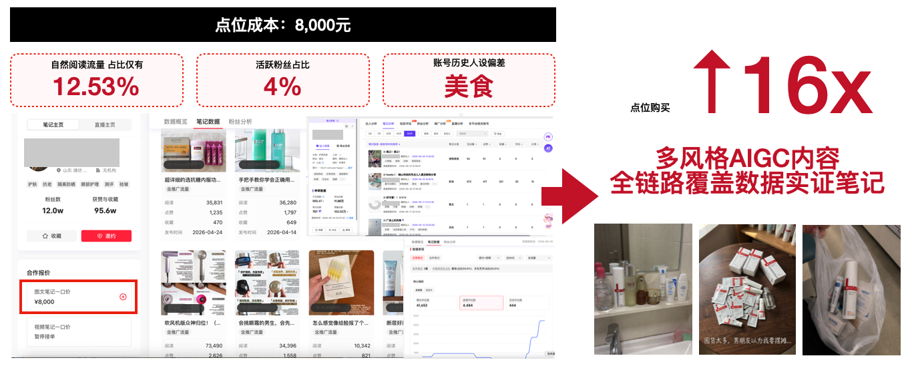
以某护肤品牌为例，预算结构从达人曝光倾斜转向内容资产生产后，内容供给、搜索覆盖和转化效率同步改善。
建议替换为真实 Dashboard、搜索词增长截图或内容矩阵示意图。
KFS 更像是以达人和投放为中心的分发模型，FSC 则是以用户问题和决策路径为中心的内容资产模型。
| 维度 | KFS | FSC |
|---|---|---|
| 中心 | 达人和流量 | 用户问题和决策路径 |
| 内容方式 | 少量内容多次分发 | 大规模细分内容矩阵 |
| 搜索策略 | 品牌词 / 品类词基础占位 | 品牌词、痛点词、风险词、对比词、长尾词全链路占位 |
| 信任来源 | 达人背书 | 达人、KOC、素人、评论区、真实记录共同验证 |
| 迭代方式 | 复盘爆文形式 | 复盘高效问题、高效场景、高效表达结构 |
过去不是算法不想做到千人千面，而是品牌没有足够细分的内容供给。AIGC 让内容生产变快，FSC 让内容生产变准。
10 条核心内容，无法承接 1000 种真实问题。用户搜索的不只是“敏感肌面霜”，而是“屏障受损怎么修复最快”“敏感肌孕妇能用吗”“医美后第几天能用”“薇诺娜和玉泽哪个好”。
从少量核心内容扩展到人群、场景、问题、阶段、疑虑的多维内容池。
| 时代 | 内容生产方式 | 用户匹配方式 | 主要问题 |
|---|---|---|---|
| 传统投放时代 | 少量脚本，多账号分发 | 一对多硬推 | 内容不够细，用户不够准 |
| 爆文复制时代 | 复制高互动模板 | 用爆文覆盖泛人群 | 容易同质化，信任下降 |
| AIGC + FSC 时代 | 大规模细分内容资产 | 多对多精准匹配 | 需要洞察、规则和持续测试 |
影响用户下单的，不只是曝光，而是痛点、场景、证据、比较、风险和信任的组合。
痛点唤醒、症状解释、问题定位。
换季、熬夜、晒后、医美后、孕期等场景渗透。
长测、前后对比、真实记录、专业背书。
横评、红黑榜、竞品对比、适用人群区分。
使用边界、避坑指南、评论区答疑。
FSC 不是让团队更快写更多内容，而是让每条内容都来自同一个真实用户问题，并能服务不同入口、不同阶段和不同决策任务。
| 环节 | 传统方式 | FSC 方式 | 效率提升 |
|---|---|---|---|
| 选题 | 靠经验、看爆文、临时想 | 从搜索词、评论区、竞品和素人反馈提取 GAP | 选题从灵感驱动变成问题驱动 |
| 脚本 | 单条打磨，反复改稿 | 同一洞察扩展多场景、多阶段、多语气脚本 | 一条洞察可生成一组内容 |
| 发布 | 达人或账号单点发布 | Feed、Search、KOC、素人、评论区协同 | 内容从曝光变成路径承接 |
| 放量 | 复制爆文形式 | 复制高效用户问题和高效表达结构 | 放量更稳，降低同质化风险 |
| 复盘 | 看互动高低 | 看问题是否被解决、搜索是否被承接、评论是否变少疑虑 | 复盘从结果判断变成机制优化 |
中间是用户问题，外圈是科普、对比、长测、问答、搜索内容。
增长不是一次爆文，而是一套可拆解、可测试、可迭代的内容资产系统。
FSC 四区模型不是四个割裂项目，而是从“确定性复制”到“增量探索”再到“信任放大”和“未来卡位”的完整增长闭环。
| 区域 | 核心输入 | 核心输出 | 衡量指标 |
|---|---|---|---|
| 保底区 | 行业爆文、竞品内容、历史投放数据 | 内容模板库、标题库、脚本库 | CTR、互动率、CPE、爆文率 |
| 快赢区 | 搜索词、评论区、素人笔记、竞品评论 | GAP 洞察卡、内容机会排序、测试脚本 | 收藏率、评论质量、搜索承接、转化线索 |
| 突破区 | 核心关键词、素人爆文、用户疑虑问题 | 素人内容矩阵、评论话术库、信任证据池 | 关键词占位、评论追问质量、首页流量占比 |
| 未来布局区 | 点点来源笔记、AI 答案引用内容、高频问题 | 点点内容策略、AI 搜索友好内容资产 | 点点引用、搜索曝光、内容复用率 |
保底区不是抄爆文，而是提炼高效内容背后的可复用因子，让品牌先具备基础内容胜率。
| 拆解维度 | 重点问题 | 输出物 |
|---|---|---|
| 标题结构 | 哪类标题能触发点击和收藏？ | 标题句式库 |
| 封面结构 | 哪类封面能提高停留和识别？ | 封面模板库 |
| 开头 3 秒 | 用户为什么愿意继续看？ | 开头钩子库 |
| 内容结构 | 爆文如何组织问题、证据和结论？ | 脚本结构库 |
| 评论反馈 | 用户真正追问了什么？ | 高频问题库 |
| 搜索承接 | 哪些内容能占住搜索结果？ | 关键词内容库 |
左侧放笔记样例，右侧用编辑批注拆标题、封面、开头、结构、评论和关键词。
快赢区是 FSC 的核心主战场。它通过搜、评、人、创、测五步，把用户真实问题快速转化为可测试、可放量的内容矩阵。
建立品牌、品类、场景、痛点、对比、风险词地图。
分析评论区、竞品内容和用户追问，形成 GAP 卡。
提炼素人笔记、自发经验和口语化表达。
把洞察转为测评、对比、教程、避坑、长测、问答。
追踪收藏、评论、搜索承接、用户复述和转化线索。
关键词是小红书搜索流量入口，也是用户主动需求的直接表达。快赢区首先要搭建搜索词战场，识别用户此刻真正想解决的问题。
| 层级 | 关键词类型 | 用户意图 | 内容策略 | 示例 |
|---|---|---|---|---|
| L1 | 品牌词 | 已知品牌，搜索验证 / 对比 | 品牌背书 + 口碑矩阵 | 薇诺娜、薇诺娜特护霜 |
| L2 | 品类词 | 有需求但无明确品牌偏好 | 品类教育 + 心智占位 | 敏感肌水乳、修复面霜 |
| L3 | 场景 / 痛点词 | 有症状但不知道品类 | 痛点唤醒 + 解决方案 | 换季泛红怎么办、屏障受损修复 |
| L4 | 竞品词 | 对比决策阶段 | 截流 + 差异化对比 | 薇诺娜 vs 理肤泉、薇诺娜和玉泽哪个好 |
| L5 | 长尾词 | 精准需求，高转化 | 深度内容 + 专业背书 | 敏感肌孕妇能用吗、玫瑰痤疮日常护肤 |
右侧放上游词、核心词、下游词的路径示意。
评论区是用户真实疑虑的高密度集合。评这一步要找出“品牌说了什么”和“用户还在问什么”之间的 GAP。
| GAP 卡模块 | 说明 | 示例 |
|---|---|---|
| 用户原话 | 用户在搜索、评论、素人笔记中的真实表达 | “敏感肌用了会不会刺痛？” |
| 隐含需求 | 用户真正想解决的问题 | 不是不关心成分，而是担心使用风险 |
| 表达缺口 | 品牌没有说清、没说透或没说到的地方 | 没有解释什么肤况适合、什么情况下不建议使用 |
| 内容机会 | 可以生产什么内容来填补缺口 | 敏感肌 7 天使用记录、刺痛原因科普、换季使用边界 |
| 验证指标 | 判断内容是否有效 | 收藏率、评论追问、用户复述、关键词搜索承接 |
小红书内容能不能被相信，很大程度取决于它有没有人感。人这一步要从素人笔记、自发经验和口语化讨论中提炼真实表达，训练 AIGC 的人感口吻。
| 品牌卖点式表达 | 用户人感表达 |
|---|---|
| 修护敏感肌屏障 | 换季脸红刺痛时，我先把护肤减到最少 |
| 温和不刺激 | 敏感爆发期用着没有那种火辣辣的感觉 |
| 适合痘后修护 | 痘痘是下去了，但红印和薄皮还在，我不敢再刷酸 |
| 医美后可用于修护 | 做完项目那几天，我最怕乱涂导致反黑 |
| 成分安全 | 孕期不是追求功效，是每个成分都想确认能不能用 |
F5 解决的是内容任务，七维矩阵解决的是内容规模化生产方式。每条内容都可以继续拆成 A×B×C×D×E×F×G 的可投测组合。
| 维度 | 对应问题 | 薇诺娜示例 |
|---|---|---|
| A 痛点 | 用户出了什么问题 | 敏感、爆痘、晒后、项目后修复、孕期护肤 |
| B 需求 | 用户想解决什么 | 日常维护、成分安全、产品有效 |
| C 状态意图 | 用户处在哪个决策阶段 | 被动种草、主动搜索、意向确认、决策转化 |
| D 目标人群 | 具体是哪类决策人群 | 维稳派、自救派、进阶派、特殊时期派 |
| E 场景埋设 | 问题发生在哪里 | 换季敏感、刷酸翻车、医美术后、烂脸日记、睡前刷手机 |
| F 内容形态 | 用什么形式表达 | 空瓶实拍、质地特写、前后对比、成分表拆解、Routine 清单 |
| G 情绪钩子 | 触发什么心理 | 焦虑共鸣、专业背书、惊喜发现、从众效应、紧迫感 |
| 内容假设组合 | 可生成选题 | 验证重点 |
|---|---|---|
| 敏感肌 × 产品有效 × 主动搜索 × 换季敏感爆发 × 前后对比图集 | 《换季脸红刺痛 7 天，我把护肤减到只剩这几步》 | 收藏率、评论“我也是”、搜索承接 |
| 长痘 × 产品有效 × 意向确认 × 熬夜后爆痘 × 质地涂抹特写 | 《油痘肌修护霜会不会闷？我连续用了 7 天》 | 完播率、评论“闷不闷”、产品点击 |
| 项目后修复 × 成分安全 × 医美术后修复周 × Routine 清单帖 | 《光子后 1-7 天，哪些先停、哪些能保留》 | 收藏率、术后问题评论、私信咨询 |
| 孕期护肤 × 成分安全 × 特殊时期派 × 睡前刷手机 × 焦虑共鸣 | 《孕期脸干泛红，我把护肤减到这 3 步》 | 收藏率、转发率、评论求确认 |
爆款是结果，资产是能力。薇诺娜在小红书冷启动期不先考核 ROI，而是用小额测试找出“敏感肌问题 × 人群状态 × 使用场景 × 信任证据”的有效组合，再沉淀为可复用的内容资产库。
围绕敏感、痘后、医美后、孕期等问题，组合人群、场景、证据和内容形态。
每组标签生成 3-5 条图文 / 短视频母版，投放小预算验证点击、收藏、评论与搜索入池。
把胜出组合沉淀为薇诺娜内容资产：可换达人、换场景、换封面、换平台继续放量。
| 阶段 | 时间 | 薇诺娜动作 | 判断标准 |
|---|---|---|---|
| 标签小测期 | 3-5 天 | 测试 5-8 组标签组合，每组 3-5 条内容母版 | 不看 ROI，先看 CTR、收藏、评论问题和搜索入池 |
| 胜出复测期 | 7-14 天 | 把胜出组合复制为 3-5 个场景 / 达人 / 表现形式 | 互动成本下降，搜索词排名稳定，评论疑虑可被承接 |
| 规模放量期 | 持续 | 建立“标签组合 - 素材母版 - 达人分发 - 搜索承接”资产库 | 同一标签公式跨账号、跨内容形态、跨平台仍能复用 |
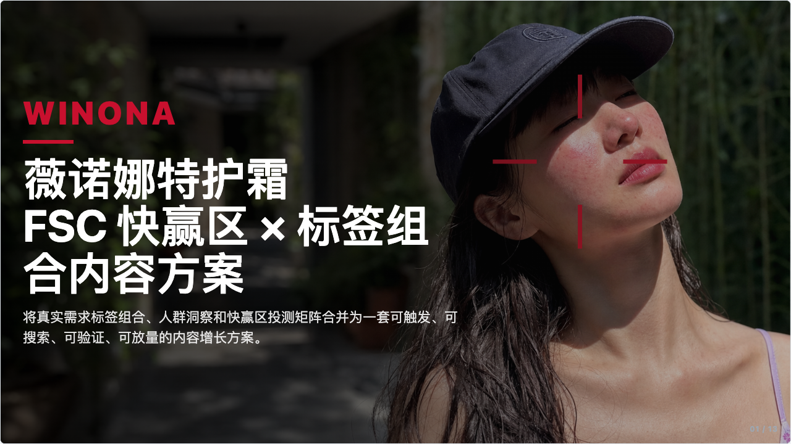
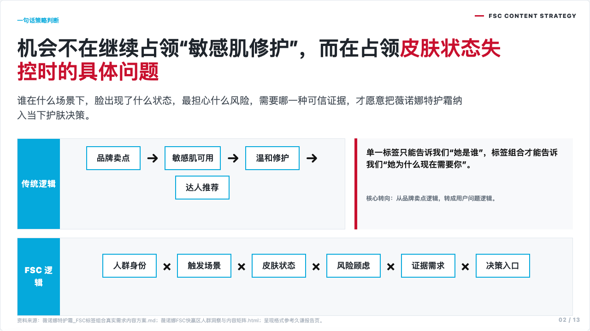
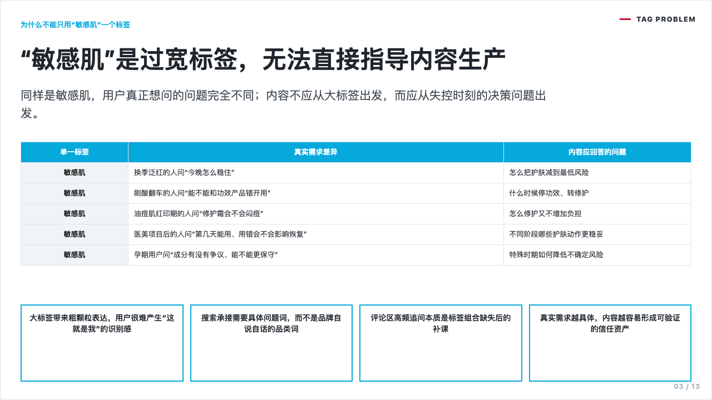
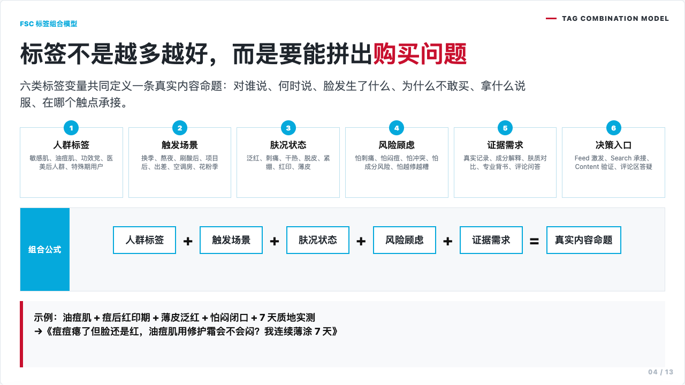
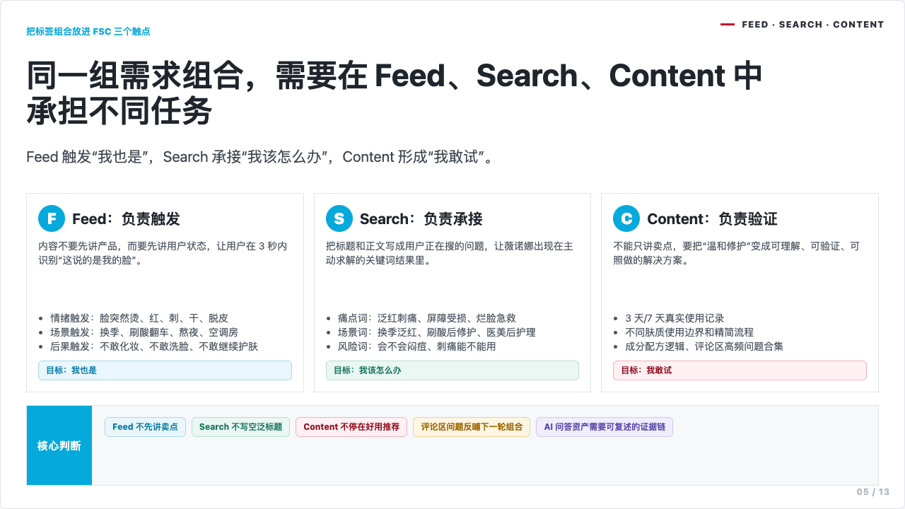
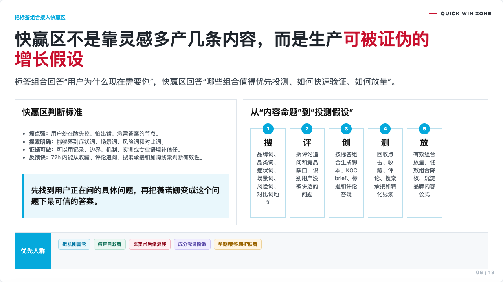
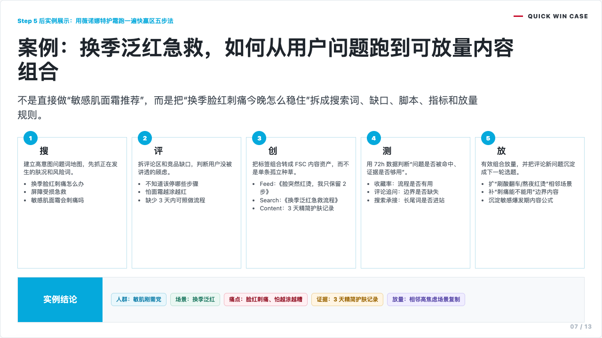
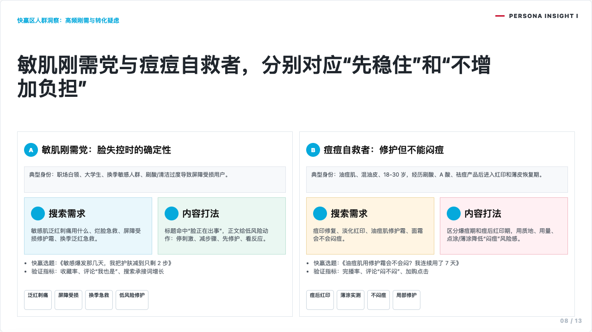
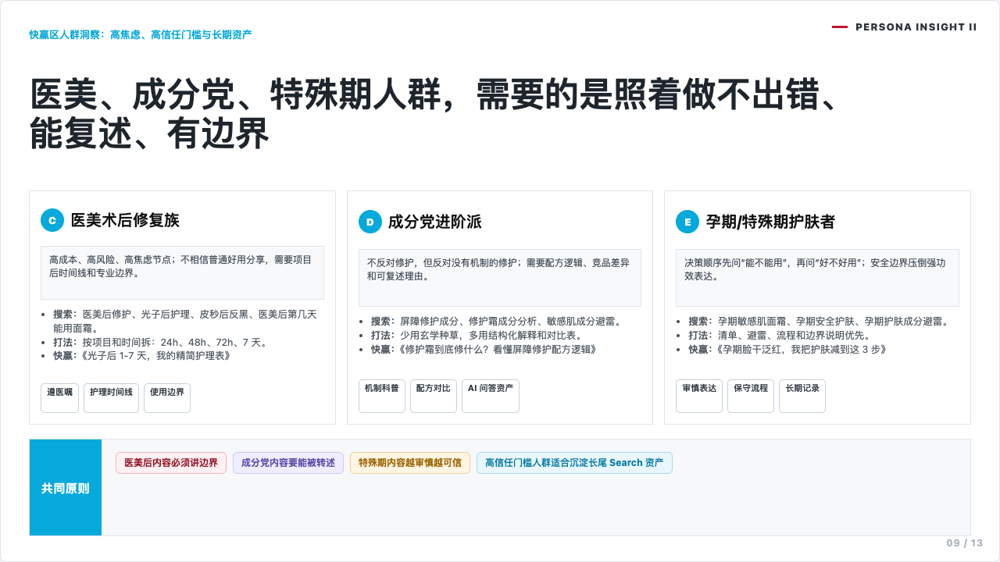
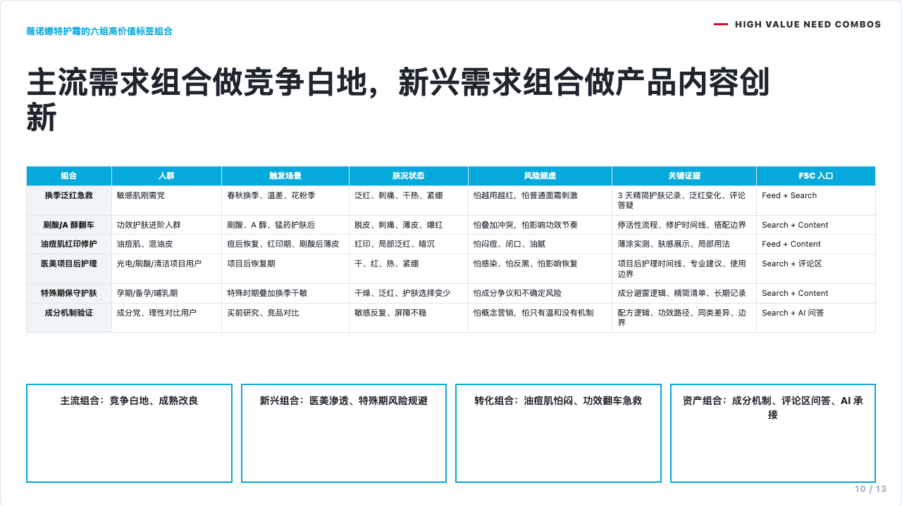
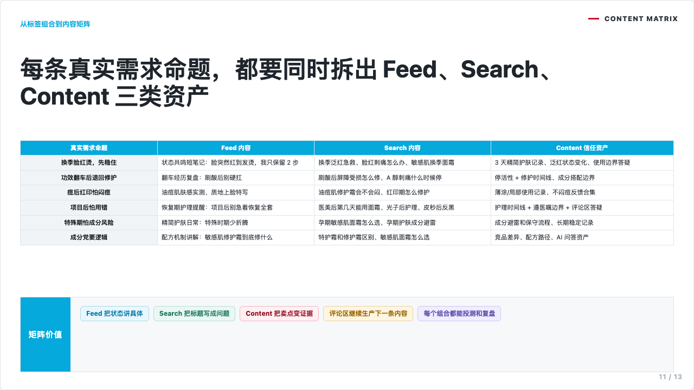
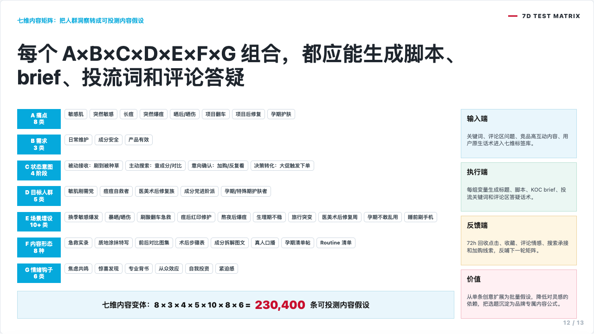
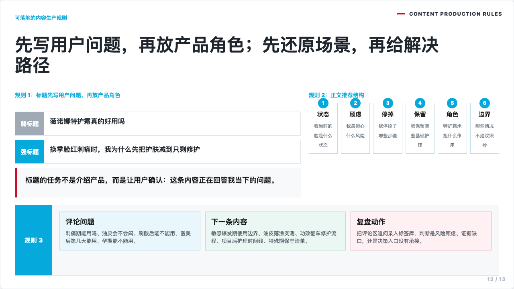
当内容越来越像，素人体验、KOC 场景和评论区追问会成为更稀缺的信任资产。突破区的核心，是用素人内容瓜分首页推荐流量，并在评论区完成决策前的信任狙击。
| 监控维度 | 执行频率 | 操作标准 | 输出物 |
|---|---|---|---|
| 核心关键词素人笔记排名 | 每日 | 抓取 Top50 中粉丝 <1w 的笔记 | 素人爆文榜单 |
| 素人笔记互动数据 | 每日 | 互动率 ≥10% 且粉丝 <1w | 潜力素人池 |
| 竞品素人笔记动态 | 每日 | 竞品素人笔记增长 ≥20% 时预警 | 竞品动态周报 |
| 素人内容类型分析 | 每周 | 归纳爆文结构、场景、表达方式 | 素人内容趋势报告 |
点点代表小红书内容被 AI 化、答案化调用的新入口。未来品牌竞争不只是争首页曝光，也是在争“被 AI 答案引用”的内容来源。
| 步骤 | 动作 | 输出 |
|---|---|---|
| 触发词识别 | 每周输入品牌词、品类词、痛点词，记录点点回答 | 高频问题清单 |
| 来源笔记反向定位 | 找到被回答引用或近似引用的笔记 | 来源笔记特征表 |
| 回答结构拆解 | 分析点点如何组织推荐、理由、注意事项 | AI 答案框架 |
| 内容特征归纳 | 判断哪些笔记更容易被引用 | 点点内容优化清单 |
用 12 周建立从诊断、洞察、测试、放量到复盘的 FSC 内容增长闭环。
FSC 不应只呈现方法论，还要明确项目周期、交付物和双方协作方式，让客户知道买到的是一套可执行的增长服务。
| 阶段 | 周期 | 核心动作 | 交付物 |
|---|---|---|---|
| 诊断期 | 第 1-2 周 | 梳理品类竞争、品牌内容、历史投放和搜索现状 | 品类搜索地图、竞品内容拆解、评论区问题库 |
| 洞察期 | 第 3-4 周 | 识别用户 GAP、排序内容机会、确定测试方向 | GAP 洞察卡、内容机会排序、测试策略 |
| 测试期 | 第 5-8 周 | 生产并测试内容矩阵，观察用户反馈和搜索承接 | F5 内容矩阵、测试脚本、素人和 KOC 内容池 |
| 放量期 | 第 9-12 周 | 复制高效内容、优化搜索承接、运营评论区信任 | 放量清单、评论区话术库、搜索承接优化建议 |
| 复盘期 | 每月 | 复盘数据表现，更新关键词和内容资产 | 月度复盘报告、下一轮内容策略、资产沉淀清单 |
用诊断、洞察、测试、放量、复盘五阶段展示服务交付。
FSC 的价值，不是帮品牌多发几篇笔记，而是帮助品牌建立一套能持续被看到、被搜索、被验证、被相信的内容资产系统。
| 区域 | 在飞轮中的作用 |
|---|---|
| 保底区 | 提供基础内容胜率 |
| 快赢区 | 发现用户尚未被满足的问题 |
| 突破区 | 用真实体验补足信任 |
| 未来布局区 | 沉淀 AI 搜索友好资产 |